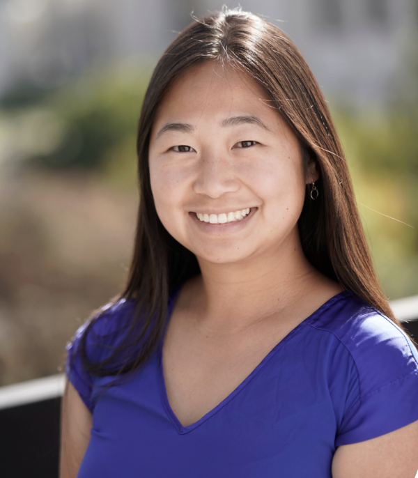

About
LLM-as-a-judge has become a standard tool for evaluating model outputs. Its multimodal counterpart has an even broader reach: multimodal LLMs grade answers about images and videos, score generated visual content, verify whether agents completed tasks, provide preference labels, and serve as rewards for reinforcement learning.
Yet multimodal judging introduces a fundamental challenge: a judge must ground its verdict in evidence beyond text, including images, video, speech, screenshots, and other sensory inputs. Current judges can suffer from perceptual errors, position bias, leniency, inconsistent verdicts, and reward hacking when policies learn to exploit their blind spots.
MMJudge brings together research on multimodal learning, reward models, judge benchmarks, agent verification, and reinforcement learning. The workshop is organized around three central questions:
- When can a multimodal verdict be trusted?
- How should multimodal judges be validated?
- How should models learn from imperfect judges?
Call for Papers
We invite empirical, methodological, theoretical, benchmark, and position papers, as well as well-documented negative results. Topics include, but are not limited to:
- Multimodal judges, critics, and reward models
- Learning from judges through data curation, RL training, inference-time scaling, and self-refinement
- Grounding verdicts in multimodal evidence and adaptive verification under uncertainty
- Verification of GUI, vision, and other multimodal agents
- Reward hacking, over-optimization, and exploitation of judge blind spots
- Reliability and reproducibility: bias, calibration, and consistency across runs and prompts
- Benchmarks and protocols for validating judges against human expectations
- Efficient judging and trade-offs between specialist judges and large general-purpose verifiers
Submission Tracks
Full papers: up to 8 pages, excluding references and appendices.
Short papers: up to 4 pages, suitable for late-breaking results, simple ideas with careful evaluations, re-analyses, and position papers.
The workshop is non-archival. Papers under review elsewhere are welcome. Reviewing will be double-blind on OpenReview with at least three reviewers per paper.
Important Dates (Tentative)
| Call for papers opens | Early December 2026 |
| Submission deadline | Late January 2027 |
| Acceptance notification | February 26, 2027, 11:59 p.m. AoE |
| Camera-ready deadline | March 15, 2027 |
| Workshop | April 29 or 30, 2027 · San Francisco |
Invited Speakers and Panelists
The following researchers have confirmed their interest in participating. Final talk and panel assignments will be announced with the program.
 AFAli Farhadi
AFAli Farhadi AYAngela Yao
AYAngela Yao LTLorenzo Torresani
LTLorenzo Torresani PZPengchuan Zhang
PZPengchuan Zhang ILIvan Laptev
ILIvan LaptevOrganizers
 PSPritam Sarkar
PSPritam Sarkar SPShraman Pramanick
SPShraman Pramanick SCSanjoy Chowdhury
SCSanjoy Chowdhury JLJiayun Luo
JLJiayun Luo
SWSerena Wang DGDeepti Ghadiyaram
DGDeepti Ghadiyaram AAAnurag Arnab
AAAnurag Arnab LSLeonid Sigal
LSLeonid SigalTentative Program
| 9:00–9:15 | Opening Remarks |
| 9:15–10:00 | Invited Talk 1 & Q&A |
| 10:00–10:45 | Invited Talk 2 & Q&A |
| 10:45–11:30 | Poster Session I & Coffee Break |
| 11:30–12:00 | Contributed Talks I |
| 12:00–2:00 | Lunch Break |
| 2:00–2:30 | Contributed Talks II |
| 2:30–3:15 | Invited Talk 3 & Q&A |
| 3:15–4:00 | Invited Talk 4 & Q&A |
| 4:00–4:30 | Poster Session II & Coffee Break |
| 4:30–5:15 | Panel Discussion |
| 5:15–5:30 | Closing Remarks |
Contact
For workshop questions, please contact Pritam Sarkar.